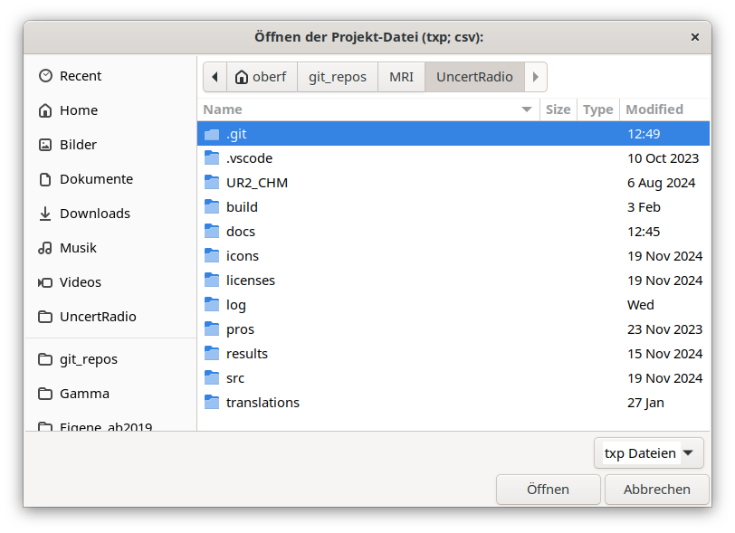

1.4. Zusatzhinweise¶
1.4.1. Datei Auswahldialog¶
Note: If this dialog is used in the mode „save as„, the desired file extension of the file name must explicitly be given or edited in the name field (at the top of the dialog). Only the pure filename has to be inserted into this field, the desired path name is selected in the dialog elements below.
Clicking on „Recently used“ shows a list of recently used files. The filenames are hold by the RecentManager of GTK; the latter works with a file „recently-used.xbel“, which e.g. for Windows is found in the folder „c:\users\[user]\AppData\Local\“ (for the actual path name, replace „[user]“ with the correct username).
1.4.2. Tabelleneingaben¶
The input of a value into a cell of a table has to be finalized with the enter key.
1.4.3. Column blocks in tables¶
Column blocks can no longer be selected with UR tables, i.e. the export of such blocks to e.g. Excel is not possible. However, the reverse way is possible: the import of a column block taken from e.g. an Excel file, or from the text editor Notepad ++, into a column block of equal size in an UR table; see also Abschnitt 5.7.
Um eine ganze Zeile auszuwählen, klicken Sie in den rechten Teil einer Zelle in dieser Zeile.